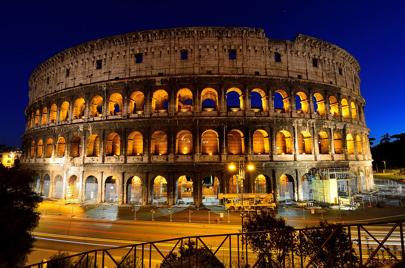

Budowano go jako Amfiteatr Flawiuszów, dziś nazywany jest Koloseum. Wizytówka i symbol Wiecznego Miasta i jedyny z 7 cudów świata znajdujący się na terenie Europy. Koloseum powstało za rządów cesarza Wespazjana w latach 72-79. Przetrwało wojny, katastrofy, w tym trzęsienia ziemi. Szczęśliwym trafem umknęło też złodziejom bloków trawertynu, z którego powstało. Amfiteatr był miejscem krwawych imprez i walk gladiatorów. Organizowano tam również uroczystości o charakterze religijnym, święta państwowe oraz pokazy historyczne. Miał pomieścić aż 50 tysięcy widzów. Obecnie nikt już w nim nie walczy i nie przelewa niewinnej krwi wojowników. Pokazy okrucieństwa raz na zawsze się skończyły. Koloseum nie zamknięto jednak na głucho i nie hula po nim wiatr, udostępniono go do zwiedzania.
